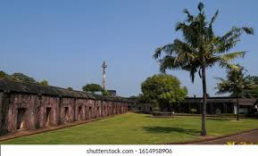
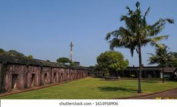
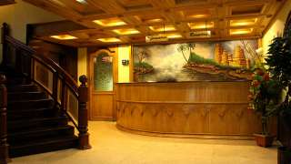
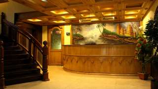
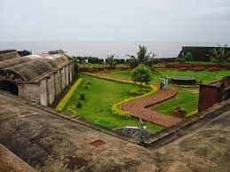
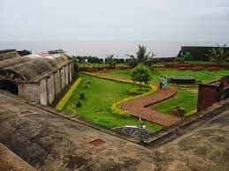

St. Angelo’s Fort
St. Angelo’s Fort is a symbol of Kerala’s colonial past, built in 1505 by Don Francesco de Almeida, the First Portuguese Viceroy in India. The fort was built with the permission of the local Kolathiri king. Soon after, Almeida decided to turn the wooden fort into one made of stone which was completed in 1507. Also known as Kannur Fort, the imposing triangular laterite fort that is now a preserved monument under the Department of Archaeology has borne witness to many conflicts The fort has changed hands many times, first being taken over by the Dutch in 1663. It then underwent a revamp, with the addition of three bastions Hollandia, Frieslandia and Zeelandia that are now its most prominent feature. The fort was purchased by the Arakkal dynasty’s Ali Raja in 1772. In 1790, the British laid claim to the historic site, seizing it from the Beevi of Arakkal to make it their main garrison till 1947. The fort overlooks the Arabian Sea, neighbouring the Mopilla Bay Harbour, a natural fishing bay, and Arakkal mosque. The fort, with its moat, ammunition dumps, tunnels, underground jails and sturdy bastions, was a formidable base making it a much sought-after structure by settlers through the ages.
 

 

 
